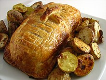

Англійська кухня
Кулінарні тррадиції
Рицепт хліба з кукурудзи
Про країну
жарина картопля - Fishenchips
Запечене мнясо в медному соусі

Хліб з Кукурудзи
Крохмаля Арсенія 17.02.2023 15:43
 Англійська кухня
Англійська кухня